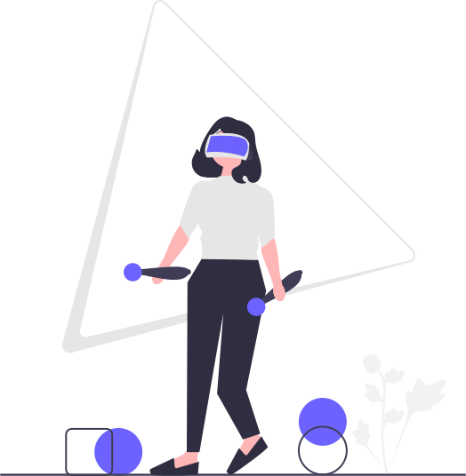

Según concluyen esos estudios, los videojuegos no solo favorecen
el desarrollo cognitivo del cerebro, sino que además resultan una
altamente efectiva herramienta de aprendizaje por su alto grado de
motivación e interacción directa con los conceptos a impartir.
¿Qué opinan nuestros usuarios?

Jose Maria
Me parece interesante este post.
Card title
This card has supporting text below as a natural lead-in to additional content.
Card title
This is a wider card with supporting text below as a natural lead-in to additional content. This card has even longer content than the first to show that equal height action.
Preguntas Frecuentes
Hablar con el hijo, explicarle las consecuencias en la vida real (familiar, social, académica, etc.) de estar abusando de los videojuegos. También es preciso evitar que los niños jueguen con programas de alto contenido violento.
Es necesario establecer estrategias alternativas para el uso del tiempo libre, y planear actividades para el hijo o los hijos en compañía de los padres. No es solo apagando las consolas que aprenden los niños a hacer buen uso de esta tecnología: también hay que poner a su alcance otras alternativas.
Hay que recordar que los videojuegos no son ni buenos ni malos: es el uso que les damos lo que los puede convertir en una fuente de recreación o una fuente de problemas.
En primer lugar, que sean conscientes de algo muy importante: que hay sitio y pastel para todos, que no es una moda ni “una cosa de frikis”. Que realmente es una industria seria y reconocida que no para de crecer tanto económicamente como en otros campos de aplicación o influencia social.
En segundo lugar, les diría que un videojuego tiene muchas partes: diseño, arte y programación son las más conocidas, creativas y técnicas, pero también existe la parte de producción, marketing, gestión de la comunidad y redes, publicidad, testeo, localización, etc. Cada uno debe ser consciente, de todas estas, cuál le gusta más o en cuál se ve que encaja mejor.
En tercer y último lugar, que sepan ver también que a nivel profesional es un mundo realmente apasionante, pero que no deja de ser eso, un trabajo. Dedicarte a los videojuegos no es lo mismo que jugarlos, aunque es cierto que cuanto más trabajas con ellos, más te gustan, los aprecias y divierten. Yo aquí siempre digo la gran cita de Confucio de que “trabaja en lo que te gusta y nunca tendrás que trabajar ni un día de tu vida”.
los videojuegos ayudan enormemente a desarrollar habilidades cognitivas especialmente en la niñez, del mismo modo que lo hacen otros juegos infantiles o incluso más.
En adolescentes y adultos jóvenes, potencian la curiosidad por aprender, favorecen determinadas habilidades (tanto sociales y de desarrollo personal como de razonamiento o resolución de problemas), permiten el desarrollo de distintas áreas transversales del currículum y refuerzan la autoestima. En adultos de avanzada edad e incluso ancianos, ayudan a retrasar el deterioro de la visión, la memoria o la capacidad de atención.
Además, en otras iniciativas de aplicación de videojuegos con personas que presentan algún trastorno psicológico, o como terapia del dolor en enfermos terminales, e incluso en personas con discapacidades mentales, se están alcanzando resultados bastante positivos.
Hablar con el hijo, explicarle las consecuencias en la vida real (familiar, social, académica, etc.) de estar abusando de los videojuegos. También es preciso evitar que los niños jueguen con programas de alto contenido violento.
Es necesario establecer estrategias alternativas para el uso del tiempo libre, y planear actividades para el hijo o los hijos en compañía de los padres. No es solo apagando las consolas que aprenden los niños a hacer buen uso de esta tecnología: también hay que poner a su alcance otras alternativas.
Hay que recordar que los videojuegos no son ni buenos ni malos: es el uso que les damos lo que los puede convertir en una fuente de recreación o una fuente de problemas.